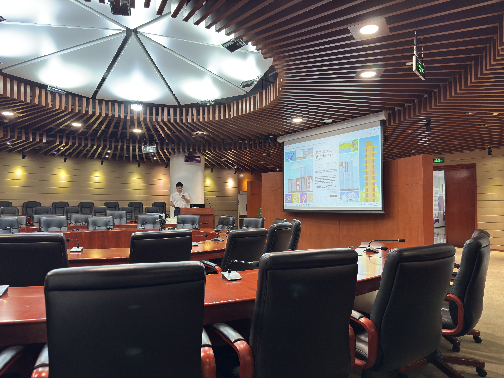

AI Math Day in CUHK-Shenzhen
I visited the AI Math Day workshop in CUHK-Shenzhen, organized by Dmitry Rybin and colleagues, Cosme Louart and Miha Brešar.
It was my first time on the CUHK-Shenzhen campus as well, so I arrived early and took the chance to wander around despite the extreme mid-day heat.
It is always interesting to note the little contrasts between the new surroundings and the city’s landscape and atmosphere to which I am already accustomed. Even though not striking, the campus definitely reads as a Hong Kong place, rather than one in the Mainland. I really do miss Hong Kong these days and hopefully I will have a chance to visit soon.
The workshop itself was situated in the Dao Yuan building’s conference room.

In recent months, I almost didn’t notice how I developed an interest in mathematics. It first started, I think, from my crystallographic side: I became interested, whether it is possible to formalize the problem of finding a unique atomic structure from the unassigned pair distribution function, which I submitted to the CUHK-Shenzhen AI Math Problems. The development of this interest kind of coincided with the recent advancements of AI tools for math with one of the most recent examples being the disproof of the unit distance conjecture.
Second notable bell for my mathematical interest rang when I was delivering a lecture on alkanes for the 1st year undergraduates in MSU-BIT and remembered that when I was introduced to the concept of alkane isomers in high school, I was explicitly told that no closed formula for the number of possible structural isomers of alkanes from the number of carbon atoms exists. When delivering the lecture, I just suddenly remembered that and thought that maybe modern mathematics had already made a breakthrough in this regard. It turned out that not much had changed since the first time I learned about the problem, so I fired up Claude Fable 5 which produced a nice computational study. No closed form found, but the coefficients in the asymptotic formula were accepted to the corresponding OEIS entry.
At the same time, the wonders that AI can do for the questions in math that interest me pose a question, whether I would ever learn math that I want to understand on a sufficient level. As I discussed with Aimeric, math PhDs at least already know mathematics, so maybe the crazy AI advances are less overwhelming for them than for me who has only the most basic understanding of math and probably unlikely to keep up with understanding what is happening now with AI systems solving math problems. Currently, I genuinely hope for some diffusion happening to my brain when I read the math and try to understand it.
One of the ideas of the workshop which I highlighted for myself as a person who doesn’t fully understand mathematicians’ daily work, is that you can’t source understanding of mathematics to a machine. Also, what will remain in the end, are the ideas and not some technical lemmas. But getting some understanding of technical lemmas and getting used to them and the machinery would be a nice start for me, I think. Just not so easy psychologically if there is a magic creature sitting right there in my terminal.